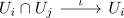

colimit of a space finer than the original space
Proposition
Let $(X, \mathcal{T})$ be a topological space, $U_i$ be subspaces and $X'$ be a colimit of

Then there exists a continuous Bijection
\begin{align*}
\iota: X' \rightarrow X
\end{align*}
Proof
continuous
follows from universal property, as $\mathrm{id}_{X}: X \rightarrow X$ defines inclusions
\begin{align*}
\end{align*}
Bijection
follows from set functor from Top as left adjoint and
\begin{align*}
X \cong (U_1 \coprod U_2)/\sim
\end{align*}